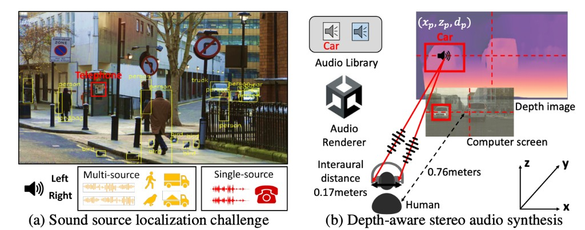

|
Ji Xie I am currently a research intern at Bytedance Seed. Previously, I was a visiting student at the Berkeley AI Research (BAIR) Lab, UC Berkeley, advised by Prof. XuDong Wang and Prof. Trevor Darrell. My interests span from applications to fundamental principles. My current research focuses on foundation multimodal models and their applications. Email / Google Scholar / CV / GitHub / Twitter |
|
{kind=link}
PublicationsPublications are organized by two areas: application and foundation models. Rows highlighted in yellow are key papers. |
Foundation Models |
|

|
Reconstruction Alignment Improves Unified Multimodal Models
Ji Xie, Trevor Darrell, Luke Zettlemoyer, Xudong Wang ICLR 2026 paper / code / model Unlocking the massive zero-shot potential in unified multimodal models through self-supervised learning. |
|
 |
Seeing Sound, Hearing Sight: Uncovering Modality Bias and Conflict of AI Models in Sound Localization
Yanhao Jia, Ji Xie, S. Jivaganesh, Hao Li, Xu Wu, Mengmi Zhang NeurIPS 2025 (Spotlight) paper / code SSHS studies modality conflict in sound localization and shows EchoPin improves robustness under conflicting cues. |
Application |
|
|
Unified Video Editing with Temporal Reasoner
Xiangpeng Yang, Ji Xie, Yiyuan Yang, Yan Huang, Min Xu, Qiang Wu CVPR 2026 paper / code / model / project page VideoCoF uses a see-reason-edit pipeline for mask-free, precise video editing and strong long-video extrapolation. |
|

|
In-Context Edit: Enabling Instructional Image Editing with In-Context Generation in Large-Scale Diffusion Transformer
Zechuan Zhang, Ji Xie, Yu Lu, Zongxin Yang, Yi Yang NeurIPS 2025 paper / code (2K Stars🌟) / model Image editing is worth a single LoRA! With only 0.1% training data, ICEdit delivers fantastic instructional image editing. |

|
3DIS: Depth-Driven Decoupled Instance Synthesis for Text-to-Image Generation
Dewei Zhou*, Ji Xie*, Zongxin Yang, Yi Yang (* denotes equal contribution) ICLR 2025 (Spotlight) paper / code / model 3DIS uses depth-driven decoupled instance synthesis for controllable text-to-image generation. |
Invited Talks |
|
"Reconstruction Alignment Improves Unified Multimodal Model"
Apple Research · Invited Talk · Hosted by Chen Chen and Yinfei Yang October 2025 |
Selected Honors & Awards |
|
SenseTime Scholarship
Top 30 recipients annually in China June 2025 |
|
Zhejiang Provincial Government Scholarship
December 2024, December 2023 |
|
Zhejiang Provincial Higher Mathematics Competition, First Prize
June 2024 |
|
Zhejiang Provincial Collegiate Programming Contest, Gold Medal
April 2024, April 2023 |
|
International Collegiate Programming Contest (ICPC), Shenyang Site Gold Medal
October 2022 |
|
China Collegiate Programming Contest (CCPC), Guangzhou Site Gold Medal
October 2022 |
MiscellaneousI have competitive-programming experience in ACM/ICPC and achieved a rating of 2478 on Codeforces. You can find my old blog here — it contains my competitive-programming notes :) |
|
Website template from Jon Barron |